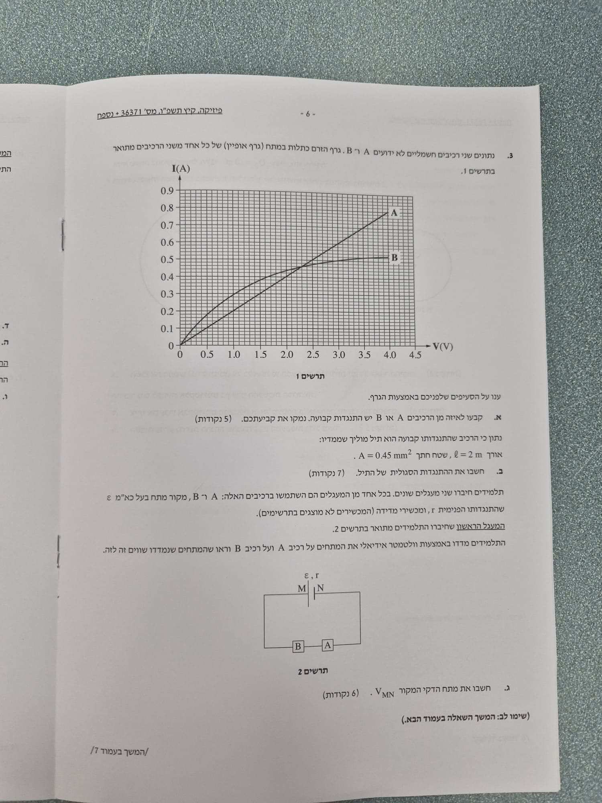

פתרון מלא המשלב ניתוח גרפי, חוק אוהם ופתרון מעגלים בטור ובמקביל
בשאלה זו ננתח התנהגות של שני רכיבים שונים דרך גרף האופיין שלהם (זרם כתלות במתח). אחד הרכיבים מקיים את חוק אוהם והשני אינו אוהמי. נשתמש בנתוני הגרף כדי לנתח מעגלים חשמליים הכוללים חיבורי טור ומקביל יחד עם מקור מתח בעל התנגדות פנימית.

לקבוע לאיזה מן הרכיבים יש התנגדות קבועה ולנמק את הבחירה.
על פי חוק אוהם, עבור נגד אופמי (בעל התנגדות קבועה), היחס בין המתח לזרם הוא גודל קבוע. בייצוג גרפי שבו הזרם \( I \) משורטט כתלות במתח \( V \), המשוואה המתקבלת היא קו ישר מסוג \( I = \frac{1}{R} \cdot V \), כאשר השיפוע שווה ל-\( \frac{1}{R} \).
גרף המציג קו ישר העובר בראשית הצירים מעיד על יחס ישר בין הזרם למתח, כלומר ההתנגדות אינה משתנה בתלות במתח המופעל. הגרף של רכיב A מקיים תנאי זה בדיוק, בעוד שהגרף של רכיב B אינו לינארי ולכן התנגדותו משתנה (הוא רכיב לא-אוהמי).
תשובה סופית: לרכיב A יש התנגדות קבועה. הנימוק הוא שגרף הזרם-מתח שלו הוא קו ישר העובר דרך ראשית הצירים, המעיד על כך שהיחס \( V/I \) (ההתנגדות) נשאר קבוע.
לחשב את ההתנגדות הסגולית, \( \rho \), של חומר התיל.
נבחר נקודה על הישר של גרף A כדי למצוא את ההתנגדות:
נציב את הנתונים בנוסחה המקשרת בין התנגדות, אורך, שטח חתך והתנגדות סגולית. נבודד תחילה את \( \rho \):
תשובה סופית: ההתנגדות הסגולית של התיל היא \( \rho = 1.13 \cdot 10^{-6}\ \Omega\cdot\text{m} \) (ב-3 ספרות מהותיות).
את מתח הדקי המקור \( V_{MN} \) במעגל זה.
בחיבור טורי, אותו זרם זורם דרך כל הרכיבים, ולכן בהכרח \( I_A = I_B \). בנוסף, הנתון אומר לנו במפורש שהמתחים עליהם שווים, כלומר \( V_A = V_B \). כדי ששני התנאים האלו יתקיימו בו-זמנית, אנו מחפשים בגרף נקודה שבה לשני הרכיבים יש גם את אותו המתח וגם את אותו הזרם. נקודה זו היא נקודת החיתוך של שני הגרפים.
מבחינה מדוקדקת של הגרף, שני הגרפים נחתכים בנקודה שבה הזרם הוא \( I = 0.46 \text{ A} \) והמתח הוא \( V = 2.3 \text{ V} \). נציב ערכים אלה במשוואת המתח הכולל של המעגל החיצוני (שהוא מתח ההדקים של המקור):
תשובה סופית: מתח הדקי המקור, \( V_{MN} \), במעגל הטורי הוא \( 4.6\text{ V} \).
את הזרם הכולל הזורם דרך מקור המתח במעגל זה.
במעגל מקבילי כפי שמתואר בתרשים 3, שני הרכיבים מחוברים לאותן נקודות צומת, ולכן המתח עליהם שווה. על פי הנתון על רכיב A מתקיים גם:
נוציא כעת מהגרף את ערכי הזרם המתאימים למתח של \( 3.5\text{ V} \) עבור כל אחד מהרכיבים:
נחשב את הזרם הכולל שיוצא מהמקור (על פי חוק צמתים של קירכהוף):
תשובה סופית: הזרם הכולל שזורם דרך מקור המתח הוא \( 1.22\text{ A} \).
את הכא"מ (\( \varepsilon \)) ואת ההתנגדות הפנימית (\( r \)) של מקור המתח.
נרשום את משוואת מתח ההדקים עבור כל אחד משני המעגלים (המצבים), כך שנקבל מערכת של שתי משוואות לינאריות עם שני נעלמים (\( \varepsilon \) ו- \( r \)):
נחסר את המשוואה השנייה מהמשוואה הראשונה כדי להעלים את הנעלם \( \varepsilon \):
כעת נציב את הערך של \( r \) חזרה לאחת המשוואות (לדוגמה למשוואה של מצב 1) כדי למצוא את הכא"מ \( \varepsilon \):
תשובה סופית: הכא"מ הוא \( \varepsilon = 5.27\text{ V} \) וההתנגדות הפנימית היא \( r = 1.45\ \Omega \) (ב-3 ספרות מהותיות).
לקבוע האם המתח שיימדד כעת יהיה גדול, קטן או שווה למתח שנמדד בעזרת וולטמטר אידיאלי, ולנמק.
וולטמטר לא אידיאלי מתאפיין בהתנגדות חשמלית פנימית סופית. כאשר מחברים אותו במקביל לרכיב A, הוא מהווה מסלול נוסף למעבר זרם. כתוצאה מכך, ההתנגדות השקולה של המקטע המכיל את רכיב A יחד עם הוולטמטר, הופכת להיות קטנה יותר מההתנגדות המקורית של רכיב A לבדו (\( R_p < R_A \)).
כיוון שההתנגדות השקולה של מקטע זה קטנה, ההתנגדות הכוללת של המעגל הטורי כולו פוחתת גם היא. התנגדות קטנה יותר מובילה להגדלת הזרם הכולל היוצא מהמקור (או להישארותו בערך המקסימלי האפשרי). זרם כולל גדול יותר (או זהה) גורם למפל מתח גדול יותר (או זהה) על ההתנגדות הפנימית \( r \) ועל רכיב B (\( I_{tot}r \) ו- \( V_B \)).
על פי חוק קירכהוף למתחים במסלול סגור: \( \varepsilon = I_{tot}r + V_B + V_A \). מאחר שסכום המתחים על המקור ועל רכיב B גדל, החלק היחסי מהמתח שנותר ליפול על המקטע המקבילי (שכולל את רכיב A) חייב לרדת. לכן, המתח שיימדד על רכיב A יהיה קטן יותר.
תשובה סופית: המתח שנמדד באמצעות הוולטמטר הלא-אידיאלי יהיה קטן מהמתח שנמדד באמצעות הוולטמטר האידיאלי.